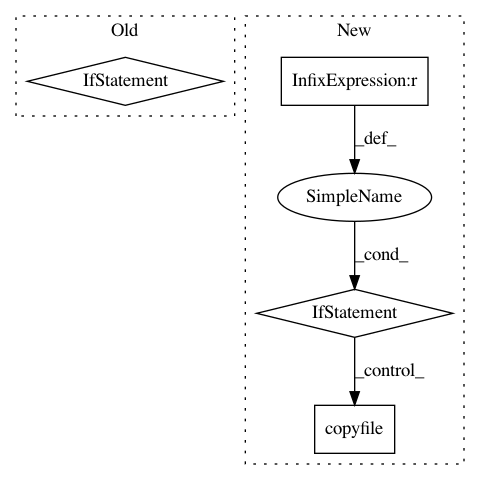

1b3b9965c20e4d0fd6541182705b7fb2b4b669bc,mlflow/tensorflow.py,,save_model,#Any#Any#Any#Any#Any#Any#,64
Before Change
signature_def_key=tf_signature_def_key)
model_conda_env = None
if conda_env:
model_conda_env = os.path.basename(os.path.abspath(conda_env))
_copy_file_or_tree(src=conda_env, dst=path)
pyfunc.add_to_model(mlflow_model, loader_module="mlflow.tensorflow", env=model_conda_env)
mlflow_model.save(os.path.join(path, "MLmodel"))
After Change
shutil.move(os.path.join(path, root_relative_path), os.path.join(path, model_dir_subpath))
conda_env_subpath = "conda.yaml"
if conda_env is not None:
shutil.copyfile(conda_env, os.path.join(path, conda_env_subpath))
else:
with open(os.path.join(path, conda_env_subpath), "w") as f:
yaml.safe_dump(DEFAULT_CONDA_ENV, stream=f, default_flow_style=False)
mlflow_model.add_flavor(FLAVOR_NAME, saved_model_dir=model_dir_subpath,
meta_graph_tags=tf_meta_graph_tags,
signature_def_key=tf_signature_def_key)
pyfunc.add_to_model(mlflow_model, loader_module="mlflow.tensorflow", env=conda_env_subpath)
In pattern: SUPERPATTERN
Frequency: 3
Non-data size: 4
Instances
Project Name: mlflow/mlflow
Commit Name: 1b3b9965c20e4d0fd6541182705b7fb2b4b669bc
Time: 2018-11-12
Author: 39497902+dbczumar@users.noreply.github.com
File Name: mlflow/tensorflow.py
Class Name:
Method Name: save_model
Project Name: ray-project/ray
Commit Name: 254b1ec370a07bbd7d60c502ce3b38f4c1fef567
Time: 2020-04-29
Author: mehrdadn@users.noreply.github.com
File Name: python/setup.py
Class Name: build_ext
Method Name: move_file
Project Name: neurosynth/neurosynth
Commit Name: e4f774a55446bb6f7fab43d999dd6fea24158e26
Time: 2014-10-27
Author: tyarkoni@gmail.com
File Name: neurosynth/analysis/cluster.py
Class Name: Clusterer
Method Name: cluster